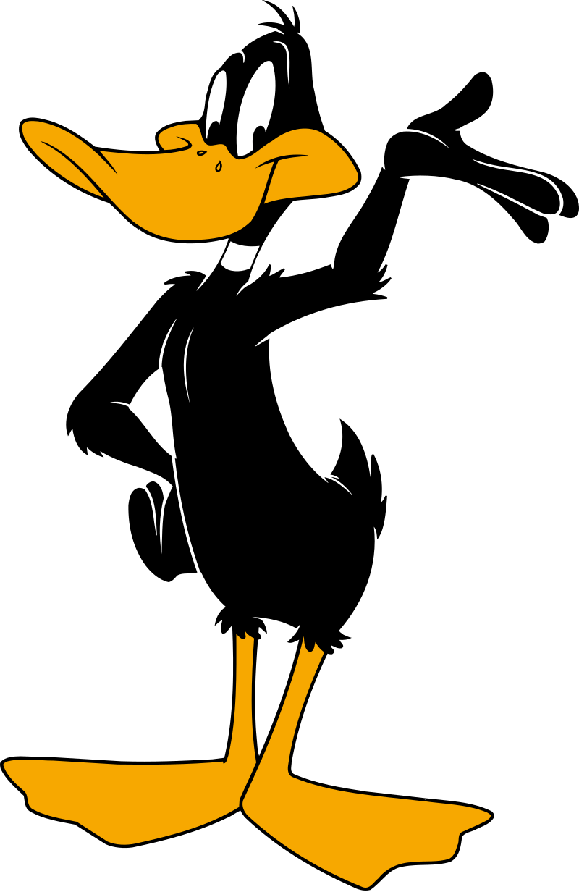
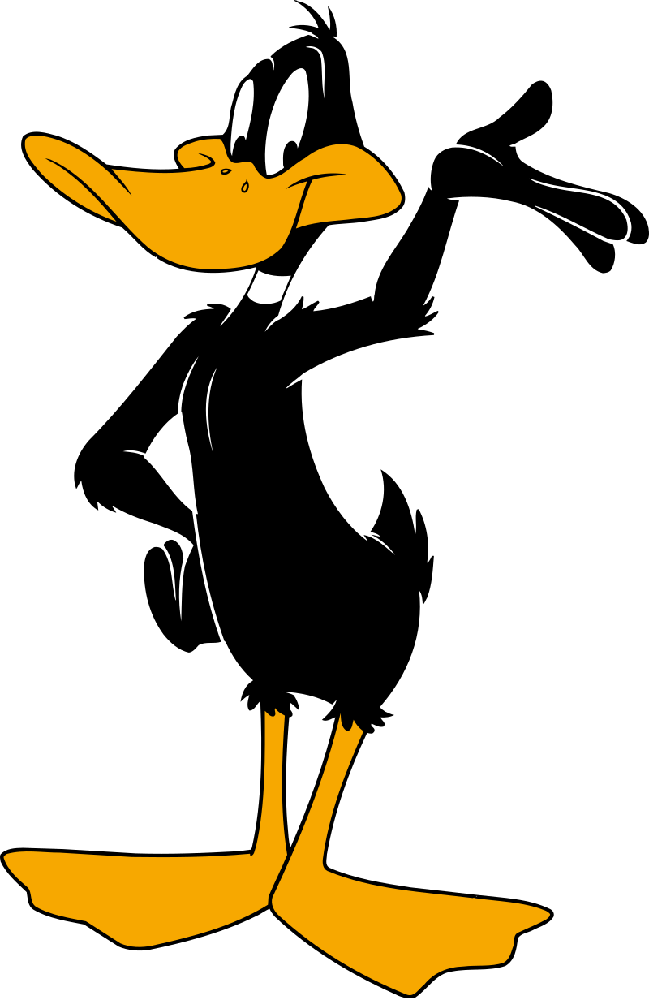
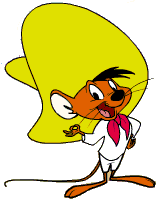
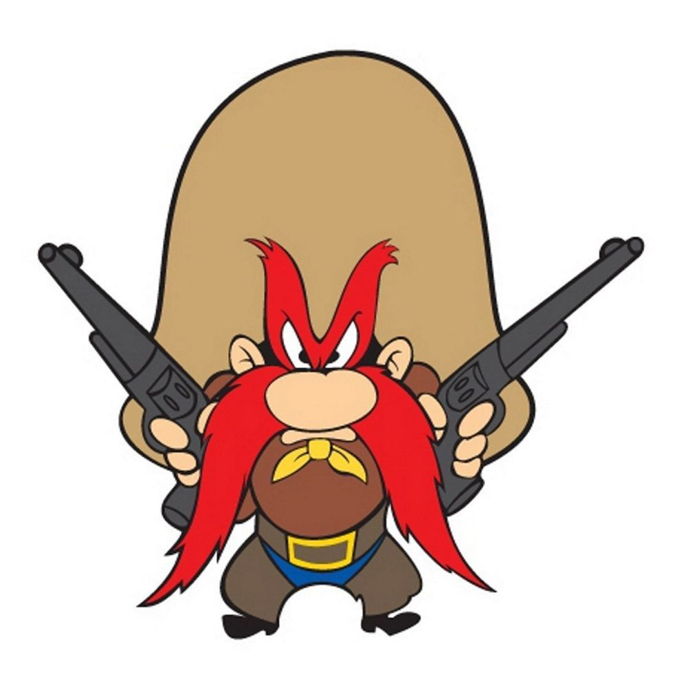
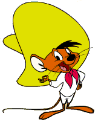
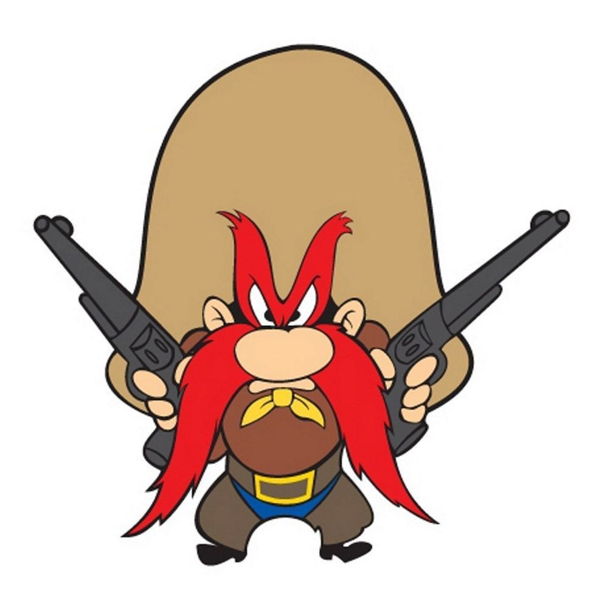

About Lola
Confident and determined, Lola is an independent woman.
She is very athletic and plays basketball very well.
She doesn't like to be called "doll".
Her Movies that I saw
- Space Jam
- Baby Looney Tunes
- The Looney Tunes Show
- Rabbits Run
Her Friends
Lola has very good friends. She also has one enemie. Click on the links below to read more about them:
 

 



Her Family

- Walter Bunny (Father)
- Patricia Bunny (Mother)